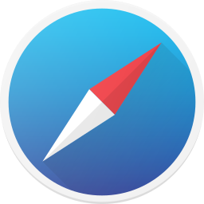

| Mozila Firefox |
 |
| Descrição |
| Mozilla Firefox é um navegador livre e multiplataforma desenvolvido pela Mozilla Foundation com ajuda
de centenas de colaboradores. A intenção da fundação é desenvolver um navegador leve, seguro, intuitivo e
altamente extensível. |
| https://www.mozilla.org/pt-BR/firefox/new/ |
| Google Chrome |
|
| Descrição |
| O Google Chrome é um navegador de internet, desenvolvido pela companhia Google com visual
minimalista. Foi lançado pela primeira vez em setembro de 2008, para o Microsoft Windows,
e mais tarde foi portado para Linux, Mac, iOS e Android. |
| https://www.google.com/intl/pt-BR/chrome/ |
| Microsoft Edge |
|
| Descrição |
| O Microsoft Edge é um navegador da internet desenvolvido pela Microsoft. Ele é o sucessor
do Internet Explorer, atuando como o novo navegador padrão de internet
da Microsoft |
| https://www.microsoft.com/pt-br/edge?r=1 |
| Safari |
|  |
| Descrição |
| O Safari é um navegador de internet desenvolvido pela Apple Inc. Ele foi introduzido como
o navegador padrão do sistema operacional Mac OS X v10.3 (Panther) em 2003. |
| https://support.apple.com/downloads/safari |
| Opera |
|
| Descrição |
| Opera é um navegador da web desenvolvido pela companhia Opera Software e disponibilizado para
Microsoft Windows, Mac OS X e Linux, usando o motor Blink. |
| https://www.opera.com/pt-br/download |